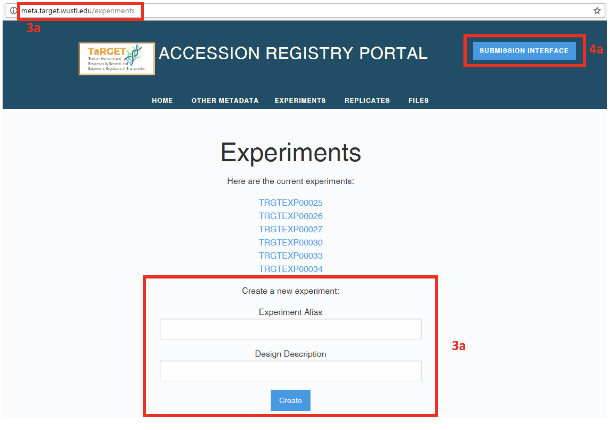
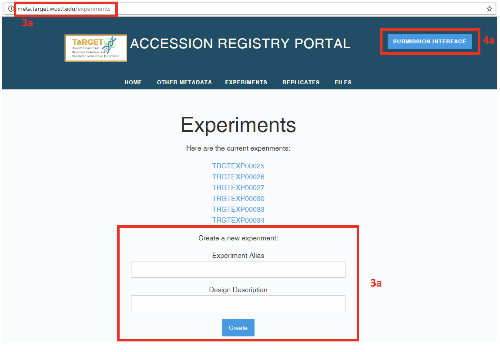

Submitting data to the TaRGET DCC¶
Log in to the Submission Pipeline (http://submit.target.wustl.edu/)
- On your first login, you will need to register as a new user (“Create New Account”). After completing all fields, select “Create”, then “Login”. If you have a consortium wiki account, you should use the same username and email for this account.
- The home screen lists your registered Experiments (an organizational unit that allows you to group together related files for upload) and allows creation of new Experiments.

Register metadata for the submission
- Before data submission, you must fill out several pieces of information about the experiment from which the files were generated (e.g., how the mouse was treated, how the assay was performed). Click on “Register Metadata” to go to the Accession Registry (http://meta.target.wustl.edu).
- The metadata is organized into discrete categories (such as Donor, Assay, Antibody) that are linked together. The entity relationship diagram on the home page displays the relationships between the metadata categories. Some categories will have only one or a few unique instances per lab (e.g., Bioproject), while others (e.g., Donor) will have many. By storing metadata as unique objects, we can avoid entering redundant data (e.g., multiple mice may link to the same Diet and Treatment).
- Fill out metadata for the experiment by clicking on the metadata objects listed under “Other Metadata” (e.g., “Donor” for individual mice, “Assays” for experimental assays performed on nucleic acid obtained from a treated mouse).

- To create a new metadata object, fill out all of the required fields under “Create a new __”. Some fields will include a description or a drop-down menu of available terms. After you submit the object (“Create”), a notification will appear that the object was successfully created, and its randomly generated, permanent accession number will become available in the list of current objects.
- To view the details of a metadata object, select the accession number for that object. If an object has already been registered, you do not need to register it again; however, you should check to make sure that all of the fields match your submission.

- To edit a metadata object, alter the relevant fields, and select “Save changes”.
- To link a metadata object to another metadata object (e.g., associate a Donor mouse with its Treatment or Diet), select the object from the drop down menu and select “Add”. Links can also be deleted without deleting the object (“X”).
- To delete a metadata object, select “Delete _”. All links between the object and other objects must be deleted before the object can be deleted.
Add a new experiment
- Return to the Submission Interface and select “Add new experiment”. This will take you to the “Experiments” section of the Accession Registry, where you can enter a description for the group of files you are submitting. After filling in the fields, select “Create”.
 

- As with other metadata objects, an Experiment can be edited, deleted, or linked to a Bioproject by selecting the accession number of that Experiment.
- Once created, the Experiment accession will be visible in the list of your current Experiments on the Submission Interface.
Register files for submission
- Return to the Submission Interface (submit.target.wustl.edu/experiments) and select “View Details” for the Experiment for which you are submitting data. This will display a list of files currently associated with the Experiment. Then, select “Register metadata to add new files to this experiment”.

- You will be redirected to the “Files” tab in the Accession Registry (meta.target.wustl.edu/files), where you should register metadata for each data file you are submitting. Submitted files must be in fastq format and unzipped or in .gz zipped format. You must generate an md5sum for each file before registering it, which will be used to ensure that the file was completely uploaded.
- After creating the file accession, link it to the relevant Experiment by selecting from the drop-down menu under “Add an experiment associated with this file:”.
- Once created and linked to an Experiment, the file will be visible on your Submission Interface in the list of files under the experiment you selected, with Upload Status “not uploaded”.
Upload data
Select the green button labeled “Upload Data” to upload files via a web interface.
- You will be directed to the TaRGET DCC Aspera server. The first time you do this, you will be required to download Aspera to your computer. There is no cost to the user.
- Create a New Folder whose name is the token generated for your Experiment.
- Upload files to that Experiment.

- Alternatively, select “Click here” for instructions on upload via command line.
- After uploading files, refresh the page listing files under your experiment. You should see that the Upload Status has changed to “uploaded”. If the size or md5sum do not match, the Validation Status will be “error”. You must re-upload the file in that case.
- A validation script will be automatically run on the files to ensure that they are in the correct format. If the files pass validation, the Validation Status will read “valid”. If not, it will be “invalid”. In that case, please check to ensure that you have submitting valid fastq files.
Thank you for using the TaRGET DCC submission pipeline! Please contact us with any questions.